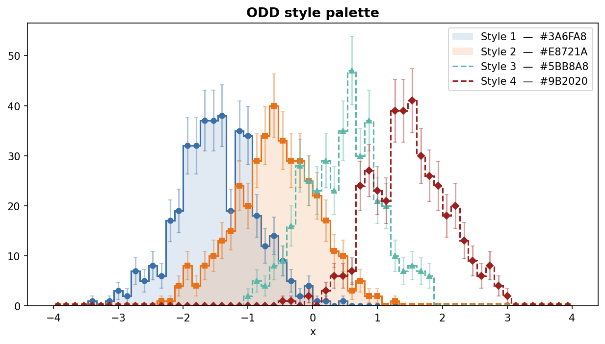
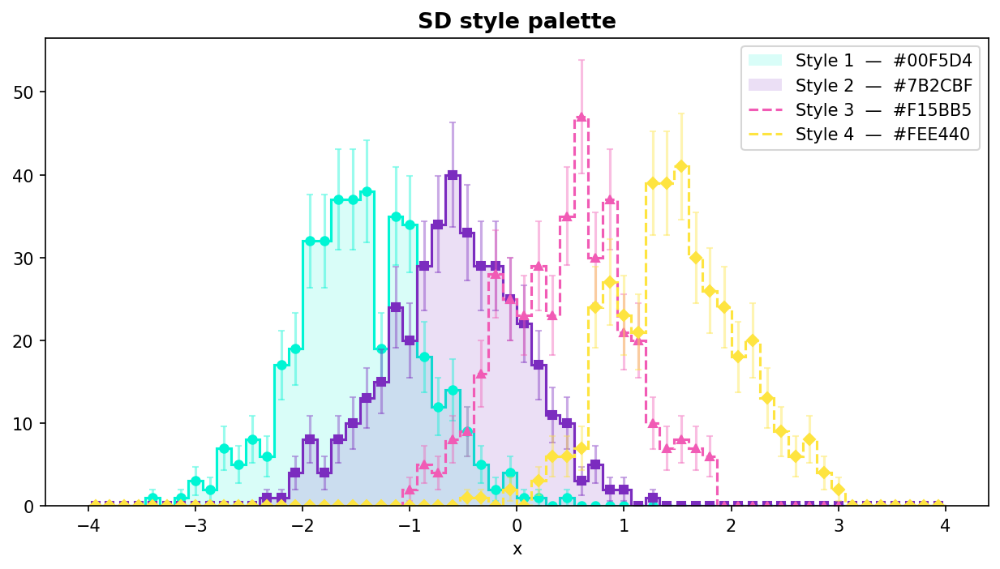

Styles & Themes
HistogramStyle
HistogramStyle is a dataclass that fully describes the visual appearance of a
single 1D histogram. Use the named constructors for common patterns, or
build the dataclass directly for full control.
Named constructors
Each constructor returns a fully configured HistogramStyle and accepts
**overrides to tweak individual fields:
from unrooted.plot.style import HistogramStyle, LineStyle
# Step fill + error bars — default for count histograms
s = HistogramStyle.as_hist()
# Step line only — no fill, no error display
s = HistogramStyle.as_line()
# Markers at bin centres + error bars — no step line
s = HistogramStyle.as_markers()
# Markers + error bars + spread band — suited for efficiency histograms
s = HistogramStyle.as_efficiency()
# Step line + spread band — suited for TProfile histograms
s = HistogramStyle.as_profile()
Override individual fields via keyword arguments:
s = HistogramStyle.as_line(line_style=LineStyle.DASHED, line_width=2.0)
s = HistogramStyle.as_hist(fill_alpha=0.30, error_display="band")

with_color()
Apply a single color to all None color fields, returning a new instance:
from unrooted.plot.style import HistogramStyle
from unrooted.plot.style_set import StyleSet
ss = StyleSet.load("odd")
# Fan one color out to line, fill, marker, error, and spread
style = HistogramStyle.as_hist().with_color(ss.colors[0])
# Explicitly-set colors are preserved by default
style = HistogramStyle(line_color="red").with_color("#3A6FA8")
# → line_color stays "red"; everything else is set to "#3A6FA8"
# Pass override_explicit=True to overwrite all color fields
style = HistogramStyle(line_color="red").with_color("#3A6FA8", override_explicit=True)
with_color() is the natural companion to StyleSet — it keeps the preset's
shape properties while pinning a specific palette color.
LineStyle constants
from unrooted.plot.style import LineStyle
LineStyle.SOLID # "-"
LineStyle.DASHED # "--"
LineStyle.DOTTED # ":"
LineStyle.DASHDOT # "-."
All fields
Color fields
All *_color fields accept any matplotlib color spec: named string ("blue"),
hex ("#3A6FA8"), or RGBA tuple ((0.23, 0.44, 0.66, 1.0)).
None means inherit the automatic color-cycle color.
Line
| Field | Default | Effect |
|---|---|---|
line_color |
None |
Step-function color (None = auto cycle) |
line_style |
"-" |
"-", "--", ":", "-.", or None (no line) |
line_width |
1.5 |
Line width in points |
line_alpha |
1.0 |
Opacity |
Marker
| Field | Default | Effect |
|---|---|---|
marker |
None |
Marker at bin centres; None = no markers |
marker_color |
None |
Defaults to line_color |
marker_size |
5.0 |
Marker size in points |
marker_alpha |
1.0 |
Opacity |
Fill
| Field | Default | Effect |
|---|---|---|
fill_alpha |
None |
None = no fill; float = opacity of shaded area |
fill_color |
None |
Defaults to line_color |
fill_hatch |
None |
Hatch pattern, e.g. "/", "x", "." |
Error bars / bands
| Field | Default | Effect |
|---|---|---|
error_display |
"bar" |
"bar", "band", "continuous", or None — see display modes |
error_color |
None |
Defaults to line_color |
error_alpha |
0.4 |
Opacity for "band" and "continuous" modes |
error_capsize |
2.0 |
Cap size in points ("bar" mode only) |
Spread (profile / efficiency histograms)
| Field | Default | Effect |
|---|---|---|
spread_display |
None |
"bar", "band", "continuous", or None to show spread_min/spread_max |
spread_color |
None |
Defaults to line_color |
spread_alpha |
0.15 |
Opacity for "band" and "continuous" modes |
spread_capsize |
2.0 |
Cap size in points ("bar" mode only) |
Error and spread display modes
Both error_display and spread_display accept the same three modes:
| Mode | Description |
|---|---|
"bar" |
Error-bar ticks with caps drawn at each bin centre |
"band" |
Step-shaped filled area that follows the bin edges |
"continuous" |
Smooth filled envelope connecting bin centres (fill_between) |
from unrooted.plot.style import HistogramStyle
from unrooted.plot.style_set import StyleSet
ss = StyleSet.load("odd")
hist = ... # Histogram with spread_min / spread_max (TProfile or efficiency)
# Ticks at bin centres
style_bar = HistogramStyle.as_profile(spread_display="bar").with_color(ss.colors[0])
# Step-shaped fill following bin edges
style_band = HistogramStyle.as_profile(spread_display="band").with_color(ss.colors[1])
# Smooth fill_between connecting bin centres
style_cont = HistogramStyle.as_profile(spread_display="continuous").with_color(ss.colors[2])
Choose "band" when the bin boundaries matter visually (it preserves the
histogram's step structure). Choose "continuous" for a cleaner, flowing
envelope — particularly useful for profile histograms with many narrow bins or
when the spread is meant to represent a smooth underlying function.
StyleSet — coordinated palettes
StyleSet loads a four-color palette from resources/{target}/colors.json and
assembles four ready-to-use HistogramStyle objects from that palette combined
with DEFAULT_STYLE_TEMPLATES.
from unrooted.plot import StyleSet
ss = StyleSet.load("odd") # or "sd"
print(ss.name) # "odd"
print(ss.colors) # ['#3A6FA8', '#E8721A', '#5BB8A8', '#9B2020']
print(len(ss)) # 4
Access styles by index — indices wrap cyclically:
ss[0] # primary – solid line, circle marker, fill
ss[1] # secondary – solid line, square marker, fill
ss[2] # tertiary – dashed, triangle marker, no fill
ss[3] # quaternary – dashed, diamond marker, no fill
ss[4] # same as ss[0]
show_errors and show_spread
Toggle error bars and spread bands across all styles at load time:
# Disable error bars on every style
ss = StyleSet.load("odd", show_errors=False)
# Enable spread bands on every style (e.g. for a TProfile overlay)
ss = StyleSet.load("odd", show_spread=True)
Custom StyleTemplate
StyleTemplate holds the shape-only properties of one slot (line style,
marker, fill). Pass a custom list to override the defaults:
from unrooted.plot.style_set import StyleSet, StyleTemplate, DEFAULT_STYLE_TEMPLATES
custom = [
StyleTemplate(line_style="-", marker="o", fill_alpha=0.20),
StyleTemplate(line_style="--", marker="s", fill_alpha=None),
]
ss = StyleSet.load("odd", templates=custom)
DEFAULT_STYLE_TEMPLATES is a public list you can copy and modify.
Using with overlay()
from unrooted.plot.mpl import overlay
from unrooted.plot import StyleSet
ss = StyleSet.load("odd")
overlay([h1, h2, h3, h4],
labels=["sig", "bkg", "data", "MC"],
styles=[ss[i] for i in range(4)])
Available palettes
| Target | a | b | c | d | Description |
|---|---|---|---|---|---|
"odd" |
#3A6FA8 steel blue |
#E8721A vivid orange |
#5BB8A8 teal |
#9B2020 dark crimson |
OpenDataDetector |
"sd" |
#00F5D4 teal |
#7B2CBF purple |
#F15BB5 pink |
#FEE440 yellow |
Super Duper |
Palette previews

